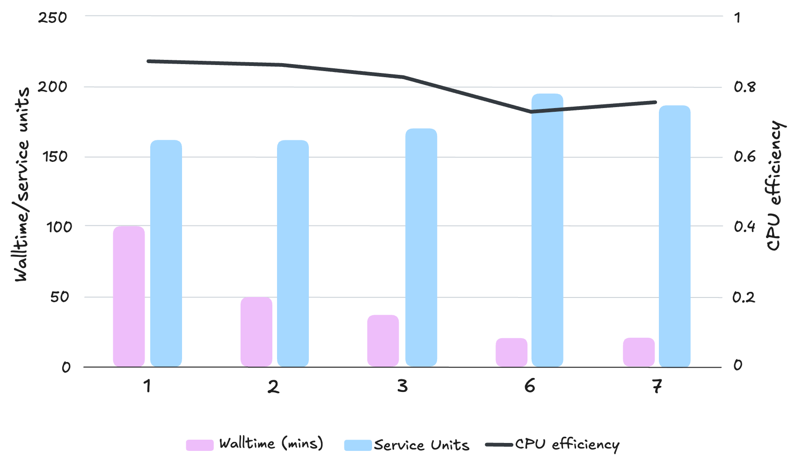
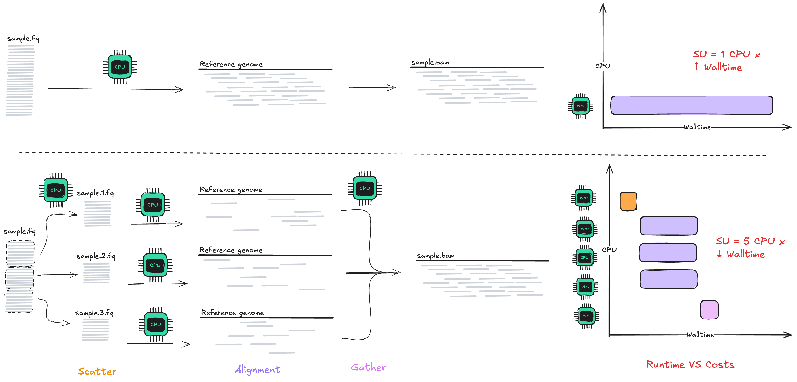

Parallelisation
Learning objectives
- Consider the limitations of parallelisation and scenarios where it should not be applied
- Differentiate between multithreading and scatter-gather approaches to parallelisation
- Implement parallelisation approaches (multithreading, multiprocessing) while preserving biological correctness
- Recall that faster jobs that use more resources are more efficient than long-running jobs with less resources
Part 1.4 introduced parallelisation approaches with the goal of speeding up your jobs by utilising more resources. As your data gets larger, or more samples are required to be processed, it needs to run efficiently. In this lesson we will explore how Nextflow supports different forms of parallelisation to help you scale your workflows.

Recall that splitting your data up across too many cores can lead to diminishing returns, such as increased SU usage and walltime. Parallelisation requires benchmarking to find the right balance between the walltime, CPU efficiency, and service unit consumption. We want to avoid over-parallelising our workflows.
Multithreading bwa mem
Recall that multithreading spawns n tasks for a single job on the one data set. In Part 1, we explored multithreading using bwa mem, and saw that more threads can reduce runtime, with diminishing returns observed at 6 and 8 threads. Now that we know bwa mem performs best at 4 threads, we will formalise this into the pipeline configuration.
Discussion
Given we want the ALIGN process to consistently use 4 CPUs, what approaches
to configuration would you take on the system you are using?
Things to consider include:
- Which
.configfile would you want to use? (nextflow.config- workflow-specific, system-agnostic;custom.config- workflow-specific, system-specific) - How much extra memory can you utilise if required? (Consider the effective RAM/CPUs proportion of the queue or partition)
Answers
custom.configto ensure it is tuned for thenormalbwqueue.- 4 CPUs with 9 GB memory
- This is the same configuration as
FASTQC, thereforewithLabelwill be used - TODO: confirm 4 CPUs with 16 GB vs 4CPU9GB
Answers
custom.configto ensure it fits theworkpartition.- 4 CPUs with 7 GB memory
- No other configuration are similar, therefore a new configuration
is needed using
withName. - TODO: confirm 4 CPUs with 6 GB memory vs. 4 CPUS with less GB
Exercise
In conf/custom.config, add the following inside the process scope:
Save your file and run with
Remember to read the tool documentation!
All software and bioinformatics tools are all built differently. Some support multi-threading, some can only run things with a single thread. Overlooking these details may not be crucial when running on systems where you have autonomy and access to all resources (personal compute, cloud instances), however, these are important parts of configuring your workflow on HPC shared systems to set reasonable limits and requests.
Multi-processing with 'scatter-gather'

One of the core benefits of running bioinformatics workflows on HPC is access to increased processing power and hardware. By leveraging multi-processing on HPC, if configured correctly, we can run many jobs simultaneously and reduce the overall walltime required to run the workflow.
Not everything can or should be split
Recall from Part 1 that we can't split everything - it should only be done if the particular processing step can be conducted independently of each other. Scattering taks does not make sense when results depend on comparing all data together, such as detecting structural variants across multiple chromosomes.
We will multi-process the alignment step. Scatter-gathering in this step is widely used as whole genome data is large, time-consuming, and the reads can be mapped to a reference independently of each other.
This requires replacing several modules:
| Before | After | Notes |
|---|---|---|
| - | SPLIT_FASTQ | Takes the paired-end FASTQ files and splits them into n chunks |
| ALIGN | ALIGN_CHUNK | Align reads to the reference genome |
| - | MERGE_BAMS | Combines aligned BAM files into a single one |
Exercise
Replace the module imports:
Before:
include { FASTQC } from './modules/fastqc'
include { ALIGN } from './modules/align'
include { GENOTYPE } from './modules/genotype'
include { JOINT_GENOTYPE } from './modules/joint_genotype'
include { STATS } from './modules/stats'
include { MULTIQC } from './modules/multiqc'
After:
include { FASTQC } from './modules/fastqc'
include { SPLIT_FASTQ } from './modules/split_fastq'
include { ALIGN_CHUNK } from './modules/align_chunk'
include { MERGE_BAMS } from './modules/merge_bams'
include { GENOTYPE } from './modules/genotype'
include { JOINT_GENOTYPE } from './modules/joint_genotype'
include { STATS } from './modules/stats'
Note
Recall that modules are useful to keep things modular and avoid cluttering our main.nf! It is far easier to swap out the module imports, in comparison to deleting the process definitions or commenting them out. We may want to reuse our revert back to our original processes too. Modules, combined with the workflow definition and groovy operators are what allow applying scatter-gather patterns (multiprocessing) to your Nextflow with ease.
Next, we need to update our workflow scope to facilitate the scatter-gather.
TODO: Note some key parts. e.g. getting chunk_id, .groupTuple().map{}.MERGE_BAMS() to merge again correctly by sample.
Exercise
Before:
TODO: untruncated for easier copying
workflow {
// truncated
// Run the fastqc step with the reads_in channel
FASTQC(reads)
// Run the align step with the reads_in channel and the genome reference
ALIGN(reads, bwa_index)
// Run genotyping with aligned bam and genome reference
GENOTYPE(ALIGN.out.aligned_bam, ref)
// Gather gvcfs and run joint genotyping
all_gvcfs = GENOTYPE.out.gvcf
.map { _sample_id, gvcf, gvcf_idx -> [ params.cohort_name, gvcf, gvcf_idx ] }
.groupTuple()
JOINT_GENOTYPE(all_gvcfs, ref)
// truncated
}
After:
workflow {
// truncated
// Run the fastqc step with the reads_in channel
FASTQC(reads)
// Perform a scatter/gather workflow by splitting the FASTQs into multiple chunks,
// aligning each chunk separately, then merging the BAMs together at the end
// Split FASTQs for each sample
reads_to_split = reads
.map { it + [ params.split_n ] }
SPLIT_FASTQ(reads_to_split)
// Extract the chunk ID from the split FASTQs and run ALIGN_CHUNK
// TODO: simplify
split_fqs_r1 = SPLIT_FASTQ.out.split_fq
.map { sample_id, fqs_1, _fqs_2 -> [ sample_id, fqs_1 ] }
.transpose()
.map { sample_id, fq1 -> {
def chunk_id = fq1.baseName.tokenize(".")[0]
[ sample_id, chunk_id, fq1 ]
} }
split_fqs_r2 = SPLIT_FASTQ.out.split_fq
.map { sample_id, _fqs_1, fqs_2 -> [ sample_id, fqs_2 ] }
.transpose()
.map { sample_id, fq2 -> {
def chunk_id = fq2.baseName.tokenize(".")[0]
[ sample_id, chunk_id, fq2 ]
} }
split_fqs = split_fqs_r1.join(split_fqs_r2, by: [0, 1])
ALIGN_CHUNK(split_fqs, bwa_index)
// Gather all BAM chunks for a sample and run MERGE_BAMS
gathered_bams = ALIGN_CHUNK.out.aligned_bam
.groupTuple()
.map { sample_id, chunk_id, bams, bais -> [ sample_id, bams, bais ] }
MERGE_BAMS(gathered_bams)
// Run genotyping with aligned bam and genome reference
GENOTYPE(MERGE_BAMS.out.aligned_bam, ref)
// Gather gvcfs and run joint genotyping
all_gvcfs = GENOTYPE.out.gvcf
.map { _sample_id, gvcf, gvcf_idx -> [ params.cohort_name, gvcf, gvcf_idx ] }
.groupTuple()
JOINT_GENOTYPE(all_gvcfs, ref)
// truncated
}
Scatter-gather patterns
How you implement the scatter-gather pattern in Nextflow will be highly dependent on your workflow structure, and input and output files. Nextflow patterns provides examples of commonly used patterns that support a range of different needs, such as splitting text and CSV files, and collecting outputs multiple outputs into a single file or groups.
Lastly, a new parameter, params.split_n was defined in workflow logic. This determines how many "chunks" each paired-end FASTQ will be split into, and importantly determines how many processes will run in parallel.
Exercise
- In
nextflow.configwithin theparamsscope, definesplit_n. - Provide a default value of
split_n = 3. This will split the FASTQ file into three chunks.
Answer
// Define params
params {
samplesheet = "$projectDir/samplesheet_single.csv"
ref_prefix = "$projectDir/../data/ref/Hg38.subsetchr20-22"
ref_fasta = "${params.ref_prefix}.fasta"
ref_fai = "${params.ref_prefix}.fasta.fai"
ref_dict = "${params.ref_prefix}.dict"
bwa_index = "$projectDir/../data/ref"
bwa_index_name = "Hg38.subsetchr20-22.fasta"
cohort_name = "cohort"
outdir = "results"
split_n = 3
}
TODO: REPLACE LABELS IN CONFIG
Lastly, add the process_small labels to each of the modules:
SPLIT_FASTQALIGN_CHUNKMERGE_BAMS
Exercise
TODO: configure the three modules withName
now run the parallelised pipeline
Your output should look similar to this
[82/d867f8] FASTQC (fastqc on NA12877) [100%] 1 of 1 ✔
[43/40bd7e] SPLIT_FASTQ (split fastqs for NA12877) [100%] 1 of 1 ✔
[0a/0ef899] ALIGN_CHUNK (2) [100%] 3 of 3 ✔
[c1/79d4cf] MERGE_BAMS (1) [100%] 1 of 1 ✔
[f8/c1663c] GENOTYPE (1) [100%] 1 of 1 ✔
[a7/a67522] JOINT_GENOTYPE (1) [100%] 1 of 1 ✔
[49/418d69] STATS (1) [100%] 1 of 1 ✔
[2e/1b5029] MULTIQC [100%] 1 of 1 ✔
Completed at: 11-Nov-2025 11:59:08
Duration : 4m 31s
CPU hours : (a few seconds)
Succeeded : 10
NOTE: The alignment module was updated to use a scatter-gather approach. Instead of aligning the entire FASTQ in one go with the ALIGN module, the workflow now:
- Splits the FASTQ into 3 chunks (SPLIT_FASTQ).
- Aligns each chunk in parallel (ALIGN_CHUNK, see the 3 of 3 completed).
- Merges the aligned chunks into a single BAM (MERGE_BAMS).
This change optimises performance for large datasets by leveraging parallel processing.
!!! What about multiple samples?
You have now applied a multi-processing approach on a single-sample. As processes are run independently of each other this does not always need to apply to single sample that is split. Running multiple samples is also a form of multi-processing and comes shipped with Nextflow's dataflow model. Once your pipeline is configured to run well with a single sample, [queue channels](https://sydney-informatics-hub.github.io/hello-nextflow-2025/part1/05_inputs/#queue-channels) make adding additional samples relatively easy.
We will revisit this in the next section.
A note on dynamic resourcing
Since our data is small and similar-sized, we can apply the same resource configurations within the same process and it will still run successfully. However, it is common that we need to run the same process with input data of widely variying sizes. For example, if we were to run variant calling with reads from the whole genome, human chromosome 1 is nearly 4x larger than chromosome 20.
One option may be to configure the resource usage so it runs on the largest data (chr. 1). This will ensure all processes run sucessfully at the cost of vastly underutilising the resources you have requested on the smaller data:
- Excess resources will be reserved other users could access
- Your jobs stay in queue for longer
- You can be charged more SUs than required
The alternative would be to take a dynamic approach when you need to process data that require unequal CPUs, memory, or walltime.
If a job fails, you can tell Nextflow to automatically re-run it with additional resources. For example:
| Directive | Closure Example | Attempt 1 (Initial Run) | Attempt 2 (First Retry) |
|---|---|---|---|
memory |
{ 2.GB * task.attempt } |
2 GB | 4 GB |
time |
{ 1.hour * task.attempt } |
1 hour | 2 hours |
Another approach is to ynamically assign a resource based on properties of the input data. For example, by the size of the file:
For more information, see Nextflow's training on:
The same concepts of configuring resources will apply here, aim to fit the appropriate queues/partitions, but will require addtional benchmarking. This is worthwhile if developing and running high-throughput workflows.
Summary
Recall that we do not always want to parallelise everything. There are reasons to avoid this due to the data set or analysis requiring data be analysed as a whole, or computational reasons where processes become less efficient.
These are some strategies to consider for your own pipelines. Run benchmarks, identify long-running or inefficent processes and consider which one of these approaches are supported by the tools (multi-threading), or can be split and processed in parallel.